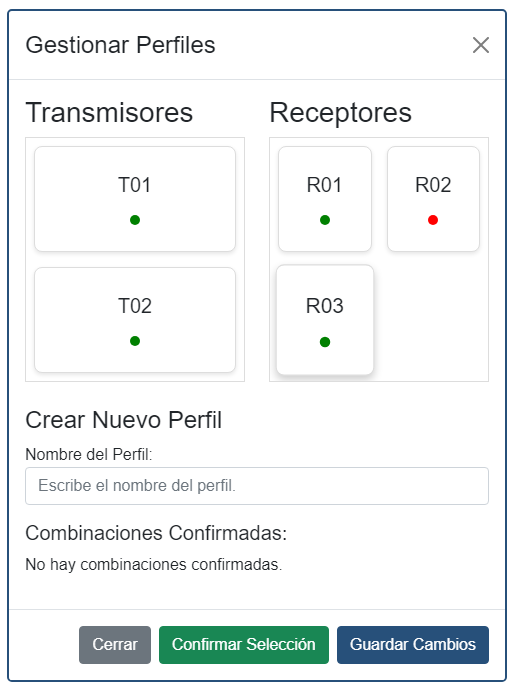

Implementación de un Sistema de Matriz de Vídeo
Este proyecto consiste en desarrollar una aplicación de gestión de una matriz de vídeo,
que permite la distribución de señales de vídeo desde varios transmisores a múltiples receptores.
Un receptor solo puede conectarse a un transmisor a la vez, mientras que
un transmisor puede enviar señal a múltiples receptores simultáneamente.
La aplicación facilitará la configuración y gestión de la matriz de vídeo, permitiendo que las configuraciones se guarden en perfiles, que estarán identificados con un nombre para facilitar la selección y cambio entre configuraciones predefinidas.
Funcionalidades principales:
- Creación y configuración de dispositivos: Los usuarios pueden crear, editar y eliminar dispositivos receptores y transmisores. Cada dispositivo tiene un nombre, una dirección IP (informativa) y un estado (Encendido, Espera, Apagado).
- Visualización en cuadrícula: Los receptores y transmisores se mostrarán en un formato de cuadrícula. Si el dispositivo está encendido, mostrará la imagen que esté transmitiendo o recibiendo.
- Asignación y gestión de perfiles: Un sistema sencillo permitirá asignar qué receptores están conectados a qué transmisores, y se podrán crear perfiles guardando sus configuraciones, lo que permitirá cambiar rápidamente de configuración según el perfil seleccionado.

Herramientas y Tecnologías:
La aplicación se desarrollará en .NET 8 (C#) utilizando Blazor Server y Visual Studio como entorno de desarrollo.
Se utilizará MySQL como base de datos preferente, y se permitirán paquetes NuGet según sea necesario.
Ver en GitHub